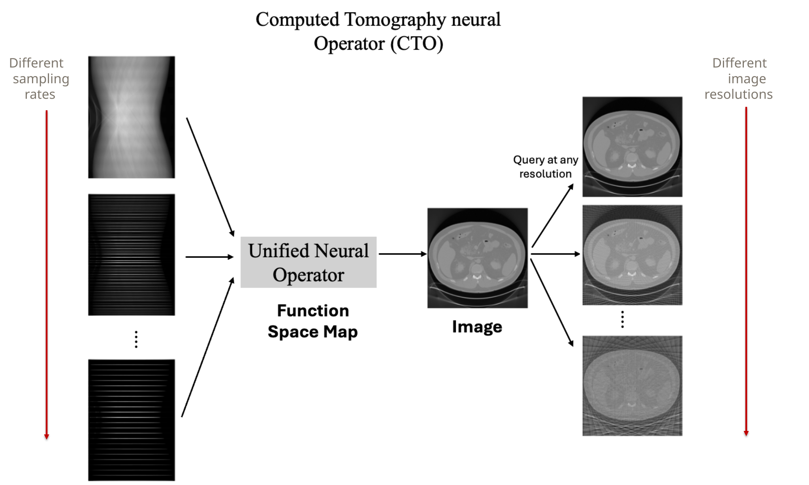

Our Proposal
We propose that instead of training a family of discrete-space networks, we train a single function space map. We do this using Neural Operators, a deep learning architecture that learns mappings between function spaces. Since a function has infinite resolution, it can handle inputs and outputs at any arbitrary discretization or resolution. Therefore, a single neural operator can ingest sinograms at any sub-sampling rate and output reconstructed images at any image resolution without any retraining required.

We use the Discrete–Continuous (DISCO) Neural Operator, which is a function space generalization of a traditional Convolutional Neural Network (CNN). Take a 3×3 CNN kernel for example. It has nine basis functions (which are the nine one-hot matrices), and we learn weights for each of these basis functions during training. For a DISCO convolutional kernel, the basis functions are continuous 2-D functions, and training learns the weights of these continuous functions. The final kernel is thus a weighted sum of continuous functions, and is hence a continuous function itself.
Since the final kernel is continuous, it can be discretized for any resolution such that its receptive field covers the same physical area of the image. For instance, the continuous kernel can be discretized to a 3×3 discrete kernel when working on 256×256 images and to a 6×6 kernel while working with 512×512 images. On the other hand, since CNNs have a fixed discretization, their receptive field covers a different physical area for images with different resolutions, and hence they need to be retrained for each resolution. Thus, by using DISCO neural operators, we can learn at one resolution and infer at any other resolution.

We use the U-shaped DISCO Neural Operator (UDNO) as the building block of our architecture. It closely follows the shape and architecture of a U-Net, except that every CNN layer is replaced with a DISCO layer.